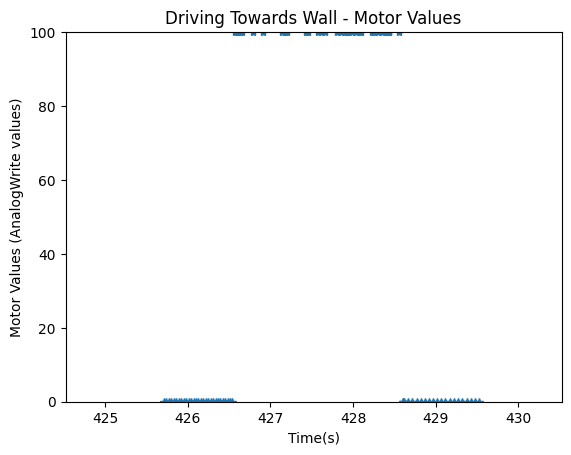
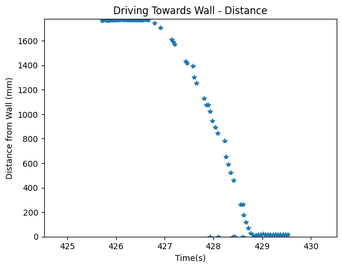
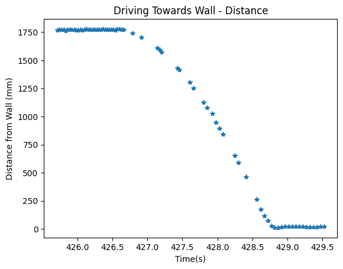
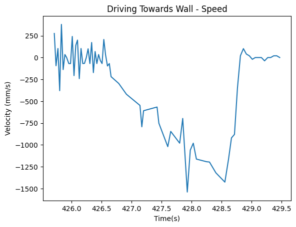
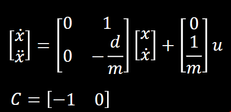
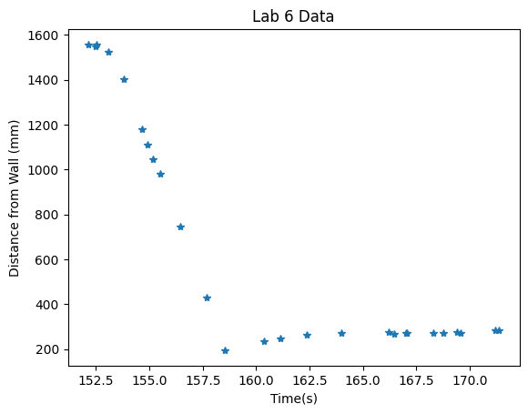
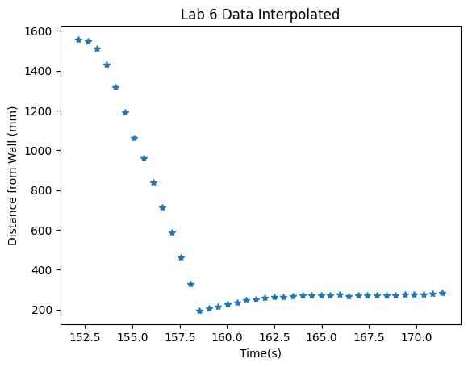
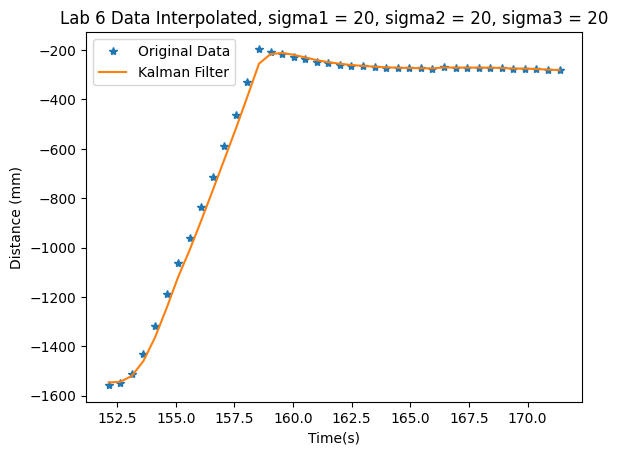
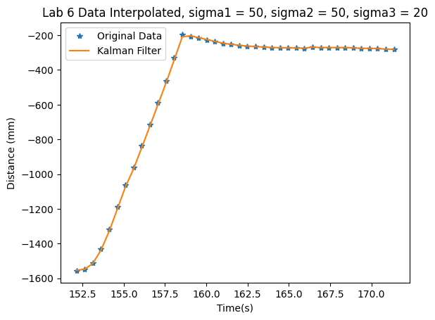

Objective
In lab 7, I implemented a Kalman Filter to allow the robot to supplement the ToF data, which was very slow, to drive even more quickly towards the wall. I chose task A in the previous lab, so I continued to use the same lab.
Estimating Drag and Momentum
I first started by estimating the drag and momentum for my system. To do this, I setup the code to, upon receiving the command over bluetooth, stay in place for 1 second, then drive towards the wall at the same PWM value that was used in the previous lab (around 127) until it was a foot away from the wall. I did not use PID control here, as I wanted to ensure that I was able to reach steady state and using PID control would slow down the robot at the end. I stored both motor values and ToF values for the entire duration that this ran.
The code I wrote for this control is shown below:
The graphs from this are shown below:
 To calculate the velocity, I discovered that my ToF data was very noisy and would result in a garbage velocity plot. Thus, I filtered out the data to remove the random 0's and small outliers that appeared. This resulted in the following ToF and velocity plots.
 Note that I ignored the large velocity spike that occured around 428 seconds in my calculations.
From the velocity graph, I found that the steady state speed was -1426.229508 mm/s, resulting in a drag of 0.00070115.
90% rise time occurred approximately 1.9 seconds from the start of driving. Thus, using the equation mass = (-drag)*(90% rise time) / ln(0.1), mass = 0.000601093. These were the values that I used for my Kalman Filter.
Kalman Filter
To initialize the arrays, I used the drag and mass that I calculated in the previous section and plugged it into the equations that were given in class, shown below. The equation is in the format dx/dt = Ax + Bu. C is [-1 0] because there is 1 state (distance from the wall) and the value is negative since the negative distance is being measured.
The Kalman filter initialization and code is shown below. The A, B, and C arrays discussed previously are in the initialization section. Process and measurement noise is discussed later.
Because I accidentally cleared my notebook from the previous lab, I had to retake the data. This is shown below:
Like the previous lab, the data was very noisy and sparse. Thus, while my motor values and ToF data were arrays of the same size, I interpolated the data to allow the KF to work better.
I looped through the data, first calling the Kalman filter with sigma1, sigma2, and sigma3 for the process and measurement noise equal to 20. This led to folowing results:
Here, you notice that the Kalman Filter does not accurately represent the robot's state when driving towards the wall. Thus, I increased the process uncertainty to have values of sigma1=sigma2=50. Sigma3 stayed the same. I got the following results:
Note that with these values, the KF is able to more accurately represent the robot's state. This means that in this case, the sensor values are "trusted" more than the motor values.
Extrapolation
In this section, I had to extrapolate the ToF sensor values so that the robot was able to run faster. This was used when the ToF data was unavailable. To do this, I used the last two values to create the expected change in dx and then used the amount of time that had elapsed since the last reading to estimate the next ToF value.